Web & Android Development
Responsive web layouts and mobile application interfaces.
HTMLCSSJavaScriptBootstrapFlutterDartLaravel Blade
Web & Android Development
I develop responsive web interfaces and Android applications, combining frontend expertise with hands-on experience in backend systems, API integration, UI/UX design, and quality assurance.
Tangerang Selatan, Banten
I focus on building functional, responsive, and user-centered applications for web and Android platforms.
My experience extends beyond frontend development to backend services, database integration, and administrative systems. With a background in UI/UX design and software testing, I approach development with attention to usability, technical functionality, and business requirements.
Responsive web layouts and mobile application interfaces.
Business logic, data workflows, and connected administration systems.
User flows, interface prototypes, and visual communication materials.
API validation, functional checks, and version-controlled development.
My application work includes Laravel business logic, database workflows, REST API integration, and administrative features such as access management, reporting, and approvals.
I review user journeys, document functional and usability issues, and validate API responses with Postman. This brings implementation and testing into the same delivery process.
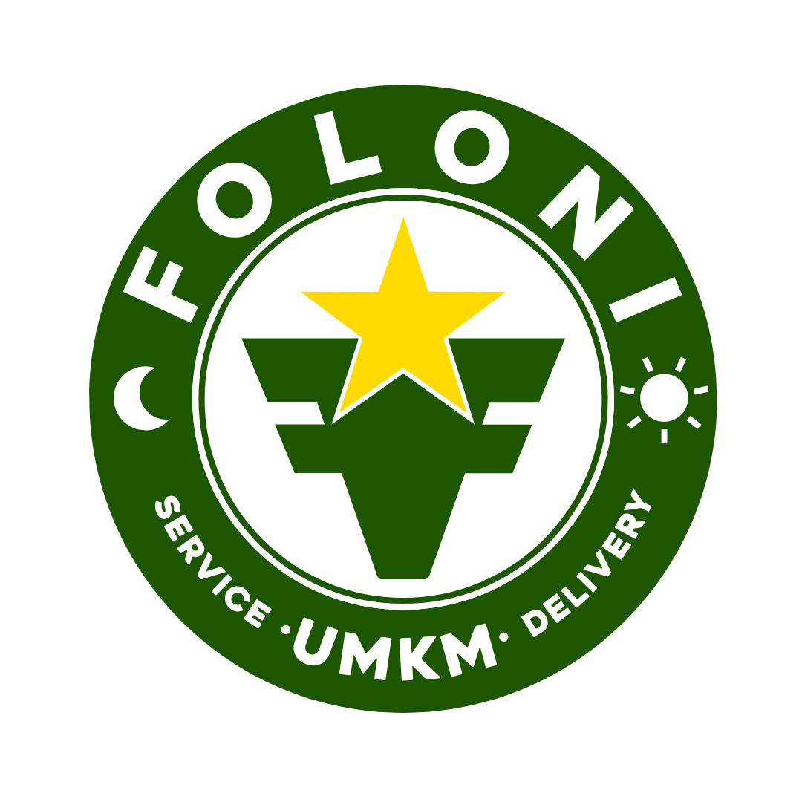
Front End Development, UI/UX, Digital Design & QA
Developed mobile and web interfaces, backend services, and administration workflows across operational and commerce products. Also contributed interface designs, visual assets, and functional testing.
Freelance UI/UX Designer & QA Specialist
Created wireframes and interface concepts for a trading application, reviewed user flows, and documented QA findings for information-heavy screens.
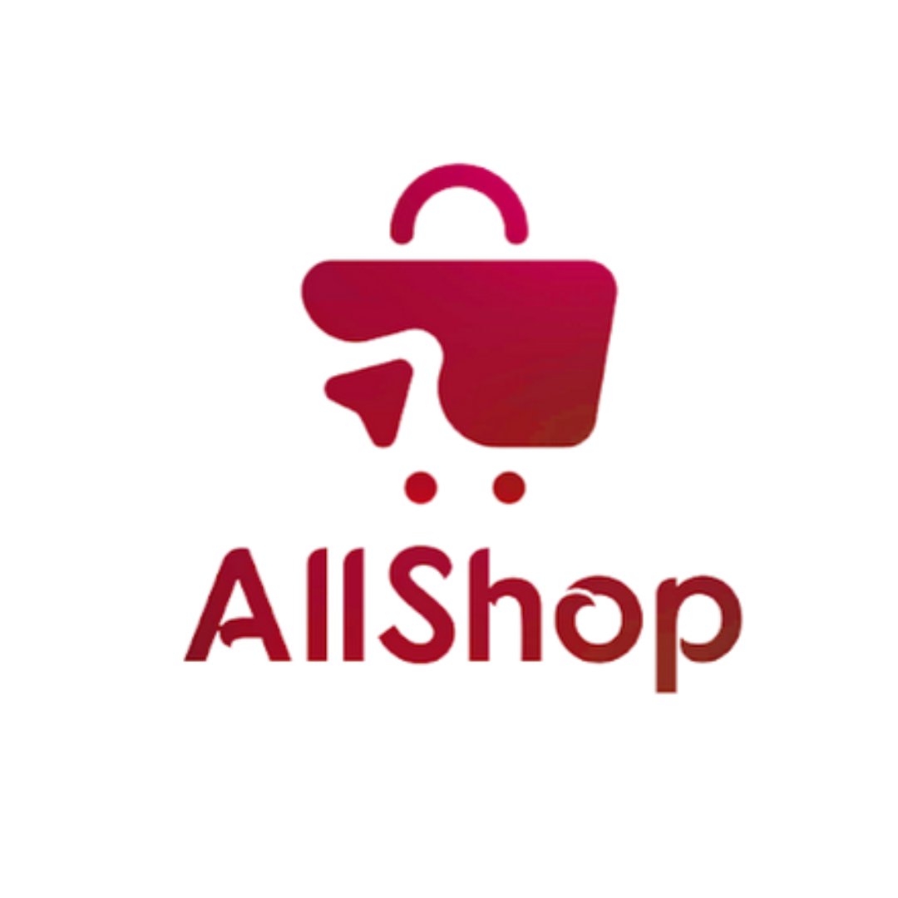
Freelance Digital Designer
Created digital communication materials and opening video assets, including storyboard direction, visual sequencing, and presentation outputs.
Explore the functionality, technical contributions, and design work behind each project.
Six projects across Android, web development, and mobile UI/QA.
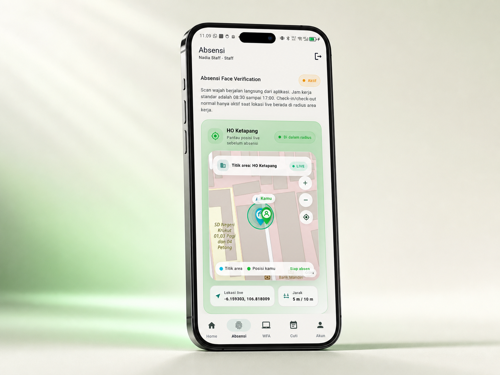
Connected attendance, field reporting, and operational administration across mobile and web.
Role: Application & Web Developer
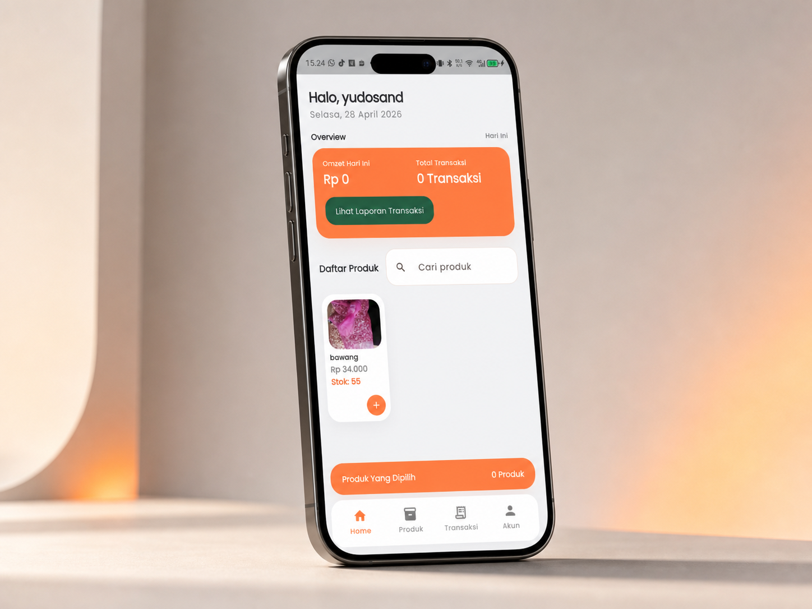
An Android sales workflow connected to inventory, invoices, and web administration.
Role: Application & Web Developer
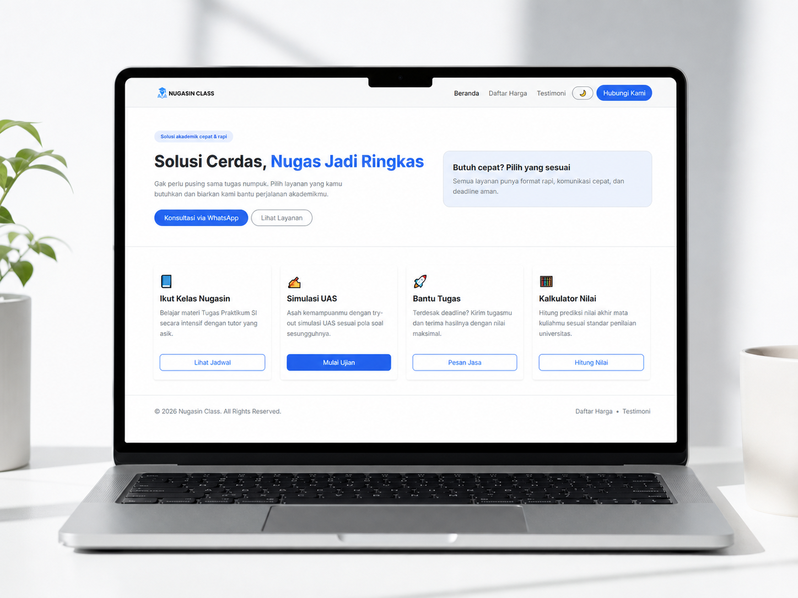
Public services and administration with progress tracking, quizzes, and automated scoring.
Role: Web Developer
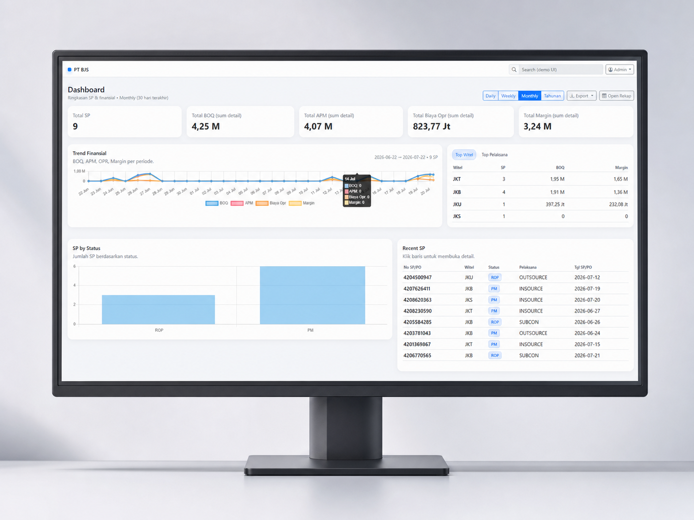
Reporting interfaces organized around clear information hierarchy and accessible monitoring views.
Role: UI/UX Designer & Front End Developer
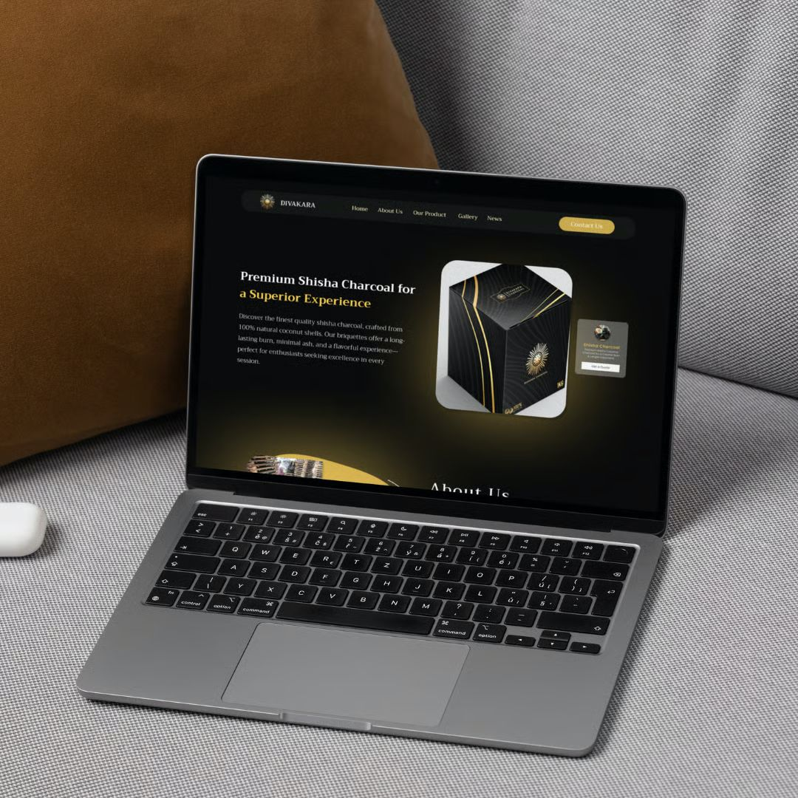
A responsive business profile with consistent page layouts and clear navigation.
Role: Front End Developer
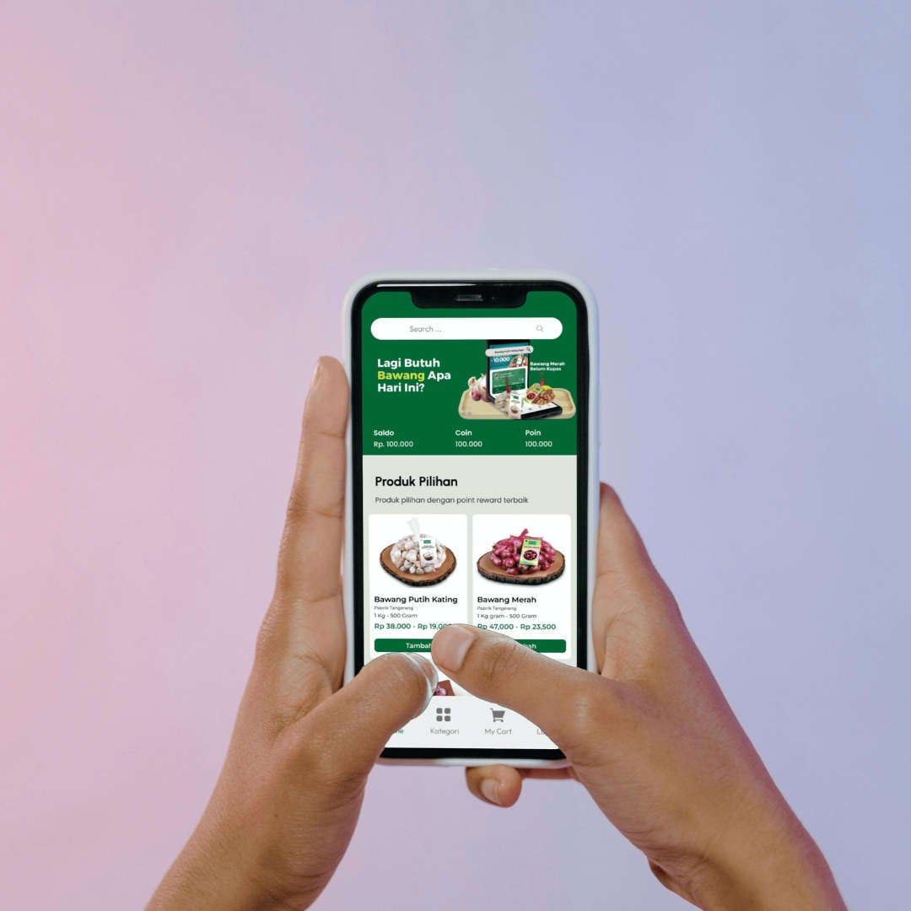
Shopping interface design, user-flow improvements, and functional testing for a mobile application.
Role: UI Designer & QA Tester
Five additional projects in websites, interface design, and brand communication.
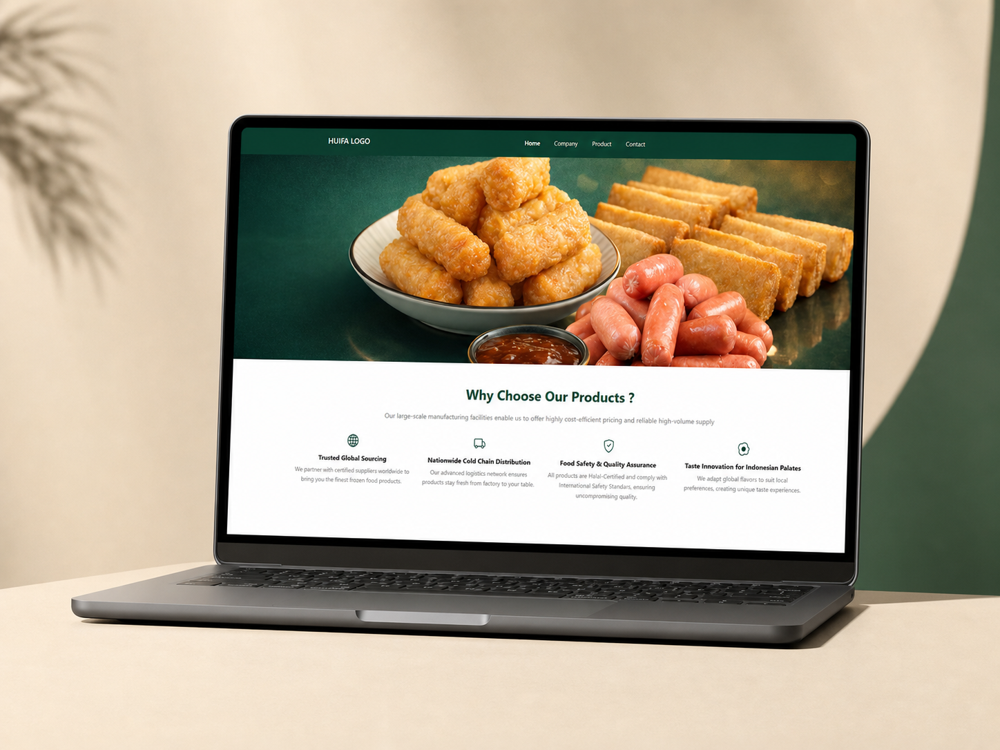
A responsive static website presenting company information and product offerings.
Role: Front End Developer
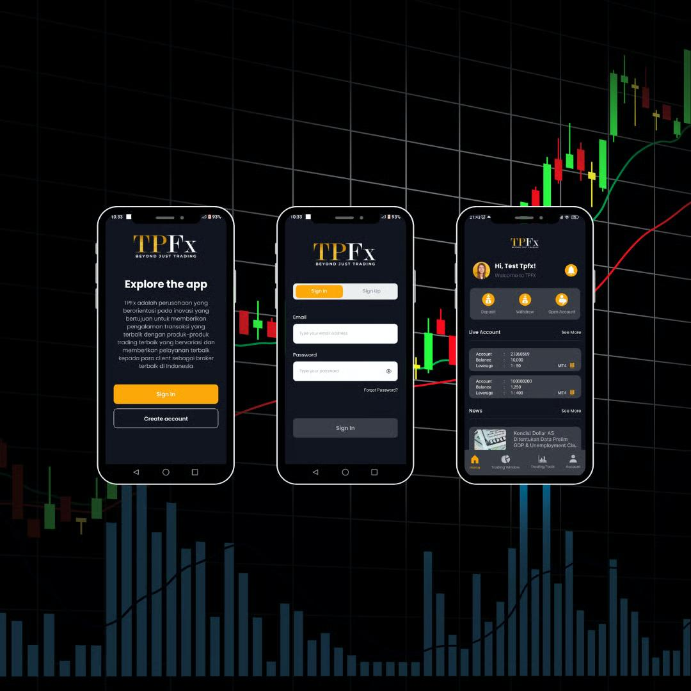
Interface concepts that bring visual clarity and consistency to financial information.
Role: UI Designer
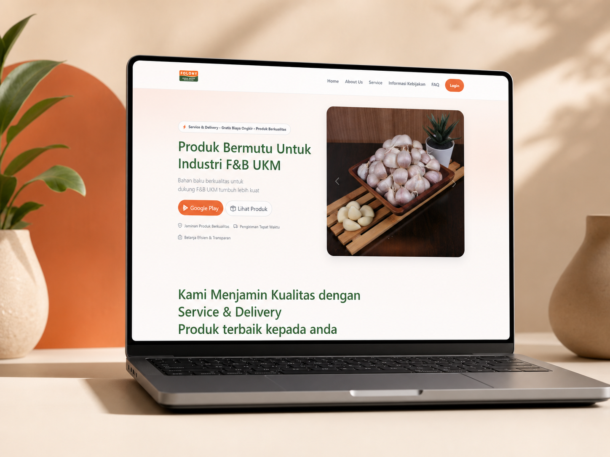
Content organization, navigation, and visual hierarchy for a corporate website.
Role: UI/UX Designer
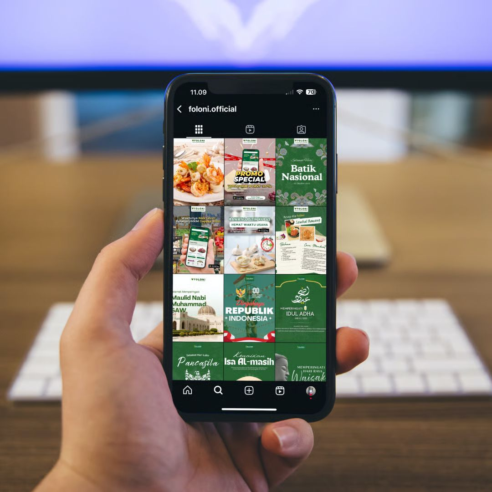
Social visuals, campaign assets, and branded communication materials.
Role: Digital Designer
Cafe menu visuals and promotional materials for printed and digital use.
Role: Digital & Branding Designer